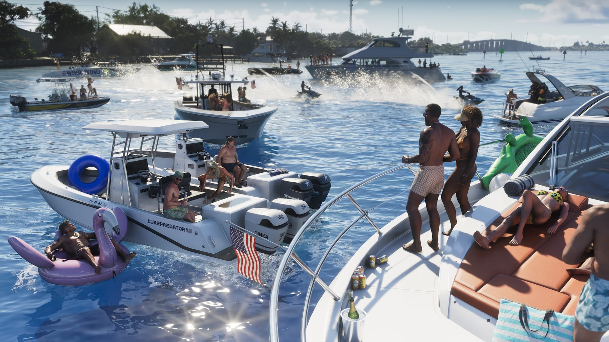
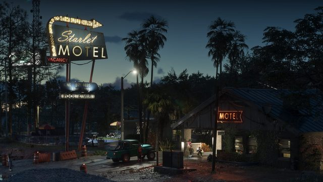
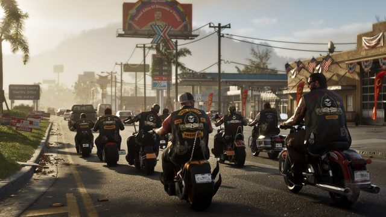

© Rockstar Games / Take-Two Interactive
Ce qu'on sait
Les 6 régions de Leonida, en un clin d'œil
EN BREF
- Six régions officielles
- Inspirées de différents visages de la Floride
- À explorer sur notre carte interactive
Selon Rockstar, chaque région montre un visage différent de la Floride.





Images : © Rockstar Games / Take-Two Interactive
Pour voir comment s'organisent les comtés et où se trouvent quartiers et points d'intérêt, ouvre la carte interactive de Leonida.